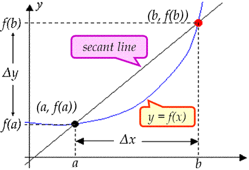

Rates of Change
Change... (Refers to the change in y)$Δy=f(b)-f(a)$
| Average Rate of Change = slope of secant line $\table ={Δy}/{Δx}; ={y_2-y_1}/{x_2-x_1}; ={f(b)-f(a)}/{b-a}$ |
 |
| Average Rate of Change = slope of secant line $\table ={Δy}/{Δx}; ={y_2-y_1}/{x_2-x_1}; ={f(b)-f(a)}/{b-a}$ |
|
ex) Find the... a) change and b) average rate of change of...
$\table f(x)=3x-4$, from $x=3$ to $x=8$
$\table \text"a) "Δy=f(b)-f(a); =f(8)-f(3); =20-5; =15$ $\table \text"b) "m_{\text"secant line"}={Δy}/{Δx}; ={f(b)-f(a)}/{b-a}; ={20-5}/{8-3}; ={15}/{3}; =3$
$\table \text"a) "Δy=f(b)-f(a); =f(8)-f(3); =20-5; =15$ $\table \text"b) "m_{\text"secant line"}={Δy}/{Δx}; ={f(b)-f(a)}/{b-a}; ={20-5}/{8-3}; ={15}/{3}; =3$